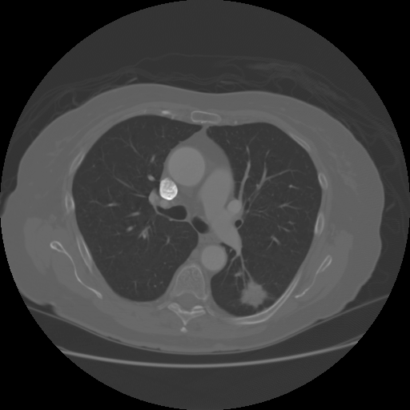
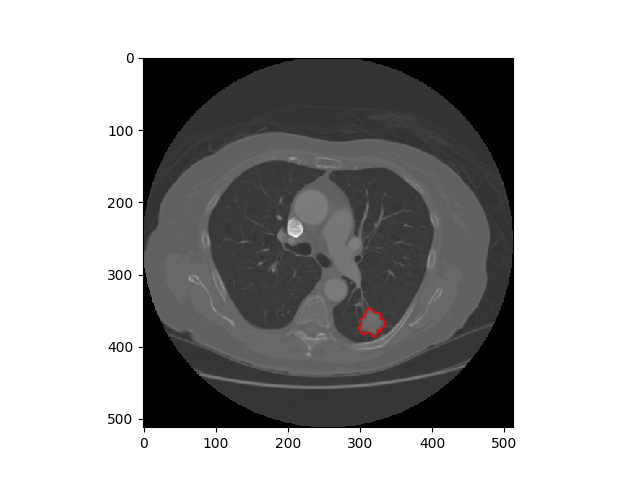
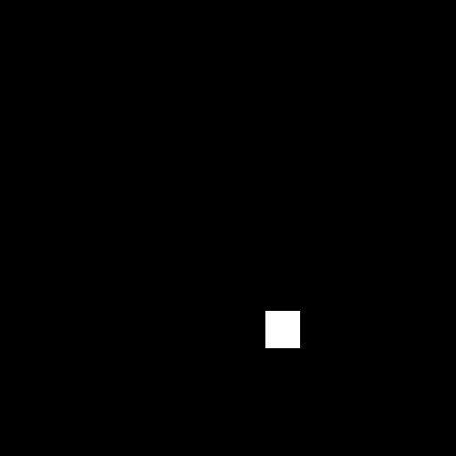

Projeto
Diagnóstico de nódulos pulmonares com o uso de Deep Learning
|
Luís Eduardo G. França Universidade Federal de Alagoas luiseduardogfranca@gmail.com |
Introdução
Identificação da região nodular
O que buscamos fazer aqui?
Tecnologias utilizadas
Python
Nós escolhemos a linguagem de programação Python
Tensorflow + Keras
Nós escolhemos essas librarys porque...
scikit-image
Nós utilizamos essa library para...
Abordagens
U-Net
Tentamos uma abordagem com a U-Net, porém ela tem uma estrutura desenvolvida para segmentação, sendo assim não compatível com o nosso objetivo que é encontrar um possível nódulo na imagem.

CNN
Utilizamos a CNN e percebemos uma acurácia semelhante da que obtivemos com a U-Net, porém com um custo computacional menor devido a sua estrutura.

Passar imagem inteira para ambas
Nossa primeira tentativa tanto na Unet como na CNN foi passar a imagem inteira para a rede neural.

Usar máscara binária como label
- Motivo 1
- Motivo 2
Imagem Original
Imagem com a segmentação do nódulo
Máscara
E falhas...
Desbalanceamento
O que foi esse desbalanceamento?
Overfitting
Por que existiu esse overfitting?
Trabalho em progresso
> Uso de técnicas de Processamento de Imagems
> Selecionar região mais próxima do pulmão